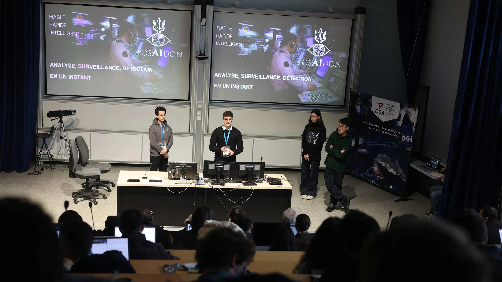

Croiser les observations
Exploiter les trajectoires AIS, les signaux radiofréquences et les éphémérides satellites à travers des outils dédiés.
Croiser AIS, radiofréquences et satellites pour expliquer une situation en mer.
Un copilote maritime qui croise les positions de navires AIS (système d’identification automatique), les signaux RF (radiofréquences) et les éphémérides satellites pour aider à comprendre une situation.

Premier prix du hackathon SPASEA 2025, organisé par Naval Group et la DGA en partenariat avec l’ENSTA. L’événement et le classement de l’équipe sont documentés par l’ENSTA.
Un navire qui ne transmet plus sa position AIS n’est pas forcément suspect. Pour qu’un opérateur puisse en juger, il faut croiser plusieurs observations et lui présenter une situation qu’il peut vérifier.
Exploiter les trajectoires AIS, les signaux radiofréquences et les éphémérides satellites à travers des outils dédiés.
Une interface de type assistant permet d’interroger la situation et d’obtenir une synthèse des éléments analysés.
Concentrer le prototype sur un scénario démontrable et présenter l’approche à un jury technique et opérationnel.
Démonstration et présentation d’un prototype d’équipe au jury du hackathon. Le premier prix distingue ce travail collectif ; il ne mesure pas une performance de détection en mer.
Trajectoires AIS, signaux RF, satellites
Outils agentiques et analyse multi-sources
Synthèse pour l’opérateur
Faire le lien entre des données hétérogènes, une analyse technique et une question concrète posée par un opérateur.
Prototype de hackathon réalisé en équipe, non validé en conditions opérationnelles en mer. Le code du prototype n’est pas public.
Pour une offre d’emploi ou un sujet de recherche, écrivez-moi.
Île-de-France, Mobilité France
Français courant, Anglais courant, Arabe langue maternelle